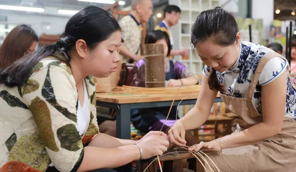

【织绣非遗访谈】苏绣传承人 | 杨敏华
10月28日
苏绣兼采文人墨客的风雅情志，或有笔墨韵味，或有文人雅趣。
...
查看全部
【竹艺非遗访谈】道明竹编传承人 | 杨静&李婷
10月21日

道明竹编，今为雅俗之艺，颇得文人雅士赏识。
...
查看全部
【竹艺非遗访谈】毛南族花竹帽编织传承人 | 谭汝&谭素娟
10月17日
毛南族花竹帽竹编，意义深远，内涵丰富。她们传承下来的是一个民族的文化，是一个民族不朽的灵魂。
...
查看全部
【织绣非遗访谈】苗族刺绣传承人 | 张婕
10月01日
一针一线总关情，山川秀丽喜相逢。
...
查看全部
【竹艺非遗访谈】道明竹编传承人 | 丁春梅
8月16日
编竹者必先成竹于心中，以手为笔，执笔熟视。文人雅士取琅玕洞之妙意。
...
查看全部
【竹艺非遗访谈】徽派竹雕传承人 | 洪建华
8月7日
捉刀稳健、行刀刚劲、构思巧妙、古朴典雅、文风厚重。
...
查看全部
【竹艺非遗访谈】青神竹编传承人 | 殷瑛
8月6日
青神竹编，薄如蝉翼，光洁如绸，历经千年风雨，至今饮誉天下。
...
查看全部
【竹艺非遗访谈】东阳竹编传承人 | 何红兵
8月3日
为往圣继绝学，奉行“守正出奇”之道，致力于工艺美学的传承与创新。
...
查看全部
【竹艺非遗访谈】川派竹编传承人 | 程丽
7月30日
小小竹编，折射着丰厚历史，体现着工匠精神，也包含着大国风采。
...
查看全部
第三届国际公共艺术奖参评作品选
6月2日
第三届国际公共艺术奖参评作品精彩呈现！
...
查看全部